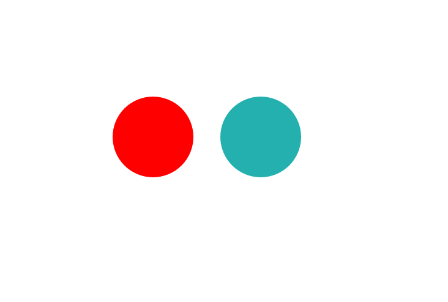

D3.js
Data-Driven Documents
Slides : bit.ly/d3-codeclass
Aysegul Yonet / @AysegulYonet
What is D3?
What d3 is not?

What you will learn
- SVG
- Selections
- Update Pattern
- Scales
- Axis
- Loading External Data
- Working with Data methods
- Working with Geospatial data
- Creating maps
- Angular and d3.js
Web Standards
- HTML
- CSS
- SVG
SVG
- Another HTML element, except you can not put another HTML element inside an SVG.
- Does not support common HTML attributes or styles such as position, left, top, right, bottom or float.
- Default svg size is browser-dependant.
Circle
Rectangle
Group

Line
Path
- M - move.
- L - line.
- z - close path.
Text
Selection
jQuery
var paragraphs = $("div p");
D3
var paragraphs = d3.select("div").selectAll("p");
var p = d3.select("body").append('p');
p.html('Hello CodeClass!').attr('style', 'color: red;');
Data
d3.selectAll("p")
.data([0, 1, 1, 2, 3, 5, 8, 13, 21, 34])
Enter()
d3.select("body").selectAll("p")
.data([3, 7, 21, 31, 35, 42])
.enter();
Append()
d3.select("body").selectAll("p")
.data([3, 7, 21, 31, 35, 42])
.enter().append("p")
.text(function(d) { return "I’m number " + d + "!"; })
.style("color", "black");
Exit() and Remove()
var bars = d3.select('body').selectAll('p').data(newData);
//if we have more data, add new 'p' for those data items
bars.enter().append('p')
//if we have less data points, remove the 'p' that no longer have a data pairing.
bars.exit().remove();
Update Pattern
// Update…
var p = d3.select("body").selectAll("p")
.data([3, 7, 21, 31, 35, 42]);
// Enter…
p.enter().append("p")
// Exit…
p.exit().remove();
Chaining
d3.select("body").selectAll("p")
.data([3, 7, 21, 31, 35, 42])
.enter().append("p")
.exit().remove();
Operating on selection
- Setting attributes or styles
- Registering event listeners
- Adding, removing or sorting nodes
- Changing HTML or text content
Transition
circles.attr("r", "0")
.attr({
'cx': function(d) {return (d * 2); },
'cy': 10
})
.transition()
.duration(750)
.delay(function(d, i) { return i * 100; })
.attr("r", 10);
Exercise
- Update the bar graph with new data
- Add tranditions to see the the enter and exit phases.
- Refactor your code to have an update method that you can call with the new data.
Scales
var scale = d3.scale.linear();
Quantitative Scale
- Linear scales
- Logarithmic scales
- Power scales
var xScale = d3.scale.linear()
.domain([0, d3.max(data)])// your data minimum and maximum
.range([0, 420]);//the pixels to map to
d3.select(".chart")
.selectAll("div")
.data([3, 7, 21, 31, 35, 42])
.enter().append("div")
.style("width", function(d) { return xScale(d) + "px"; })
var xScale = d3.scale.linear()
.domain([0, 1000])
.range([0, 200]);
console.log(xScale(500)); //100
console.log(xScale.domain());//[0, 1000]
var xScale = d3.scale.linear()
.domain([2, 3, 5, 7, 11, 13, 17, 19, 23, 29])
.range([0, 1, 2, 3, 4, 5, 6, 7, 8, 9]);
Clamp
var xScale = d3.scale.linear()
.domain([2, 3, 5, 7, 11, 13, 17, 19, 23, 29])
.range([0, 1, 2, 3, 4, 5, 6, 7, 8, 9])
.clamp(true);
Ordinal Scale
Ordinal Scale have a discrete domain, such as a set of names or categories.
var xScale = d3.scale.ordinal()
.domain(["Bob", "Stuart", "Kevin", "Scarlet"])
.rangePoints([0, 100]);
console.log(xScale("Stuart"));//33.333333333333336
xScale.range(); // [0, 33.333333333333336, 66.66666666666667, 100]

RangeBands
var o = d3.scale.ordinal()
.domain([1, 2, 3])
.rangeBands([0, 100]);
o.rangeBand(); // 33.333333333333336
o.range(); // [0, 33.333333333333336, 66.66666666666667]
o.rangeExtent(); // [0, 100]

var x = d3.scale.ordinal()
.domain(["A", "B", "C", "D", "E", "F"])
.rangeRoundBands([0, width], .1);
Color Categories
d3.scale.category10()

Time Scales
d3.time.scale()
.domain([dates])
.range([values]);
d3.format
d3.time.format("%Y-%m-%d"); //2015-08-26
d3.format("+,%"); //+2,400%
d3.time.scale - constructs a linear time scale.
var xScale = d3.time.scale()
.domain([2009-07-13T00:02, 2009-07-13T23:48])
.rangeRound([0, width]);
//rangeRound does the same thing as range but rounds the values to integers or begining of dates.
d3.time.intervals - a time interval in local time.
- d3.time.hour
- d3.time.week
- d3.time.monday
- d3.time.year
Scatterplot
var svg = d3.select('body').append('svg')
.attr({
'width': 250,
'height': 250
});
var xScale = d3.scale.linear()
.domain([0, 5])
.range([0, 200]);
var render = function(data, r, color){
//Bind data
var circles = svg.selectAll('circle').data(data);
//Enter and update
circles.enter().append('circle')
.attr({
'cx': function(d){return xScale(d)},
'cy': 30,
'r': r,
'fill': function(){return color || 'red'}
});
}
var oldData = [1, 2, 3];
var newData = [1, 2, 3, 4, 5];
render(oldData, 10);
render(newData, 15, 'blue');
var render = function(data, r, color){
//Bind Data
var circles = svg.selectAll('circle').data(data);
//Enter
circles.enter().append('circle')
//Update
circles.attr({
'cx': function(d){return xScale(d)},
'cy': 30,
'r': r,
'fill': function(){return color || 'red'}
})
}
var oldData = [1, 2, 3, 4, 5];
var newData = [1, 2, 3];
render(oldData, 10);
render(newData, 15, 'blue');
var render = function(data, r, color){
//Bind Data
var circles = svg.selectAll('circle').data(data);
//Enter
circles.enter().append('circle')
//Update
circles.attr({
'cx': function(d){return xScale(d)},
'cy': 30,
'r': r,
'fill': function(){return color || 'red'}
})
//Remove
circles.exit().remove();
}
Recap
- Bind Data.
- Enter and Append.
- Update the attributes.
- Exit and Remove.
Exercise
Chart Components
Line Graph
var line = d3.svg.line()
.interpolate("basis")
.x(function(d) {
return x(d.year);
})
.y(function(d) {
return y(d.stat);
});
Axis
var xAxis = d3.svg.axis()
.scale(xScale)
.orient("bottom");
Ticks
xAxis.ticks(5);
xAxis.tickValues([1,2,4]);
xAxis.ticks(d3.time.month, 2);
Loading External Resources
- d3.json(url[, callback])
- d3.csv(url[, accessor][, callback])
- d3.tsv(url[, accessor][, callback])
CSV
day,donut
Monday,91
Tuesday,23
Wednesday,7
Thursday,4
Friday,82
Saturday,39
Sunday,27
var x = "day";
var y = "donut";
var accessor = function(d) {
d[y] = parseInt(d[y]);
return d;
}
d3.csv("data/data.csv", accessor, function(d) {
console.log(d);//Array of objects [{day: "Monday", donut: 91},...]
render(d);
});
Exercise
- Read the census.csv file inside the data folder.
- Display or console.log the data from the file.
Working with Arrays
- d3.min/d3.max
- d3.reduce
- d3.keys - lists the keys of an associative array.
- d3.merge - merges multiple arrays into one array.
- d3.nest - groups array elements hierarchically.
- d3.quantile(numbers, p)
- d3.deviation(array[, accessor]) - returns the standard deviation
Reduce
[0, 1, 2, 3].reduce(function(a, b) {
return a - b;
});//-6
[0, 1, 2, 3].reduceRight(function(a, b) {
return a - b;
});//0
d3.nest
var donutData = [
{day: 'Monday', donut: 34, variety: "plain"},
{day: 'Tuesday', donut: 41, variety: "glazed"}
];
var nestedData = d3.nest()
.key(function(d){ return d.day;})
.entries(donutData);
[{
key: "Monday",
values: [
{day: 'Monday', donut: 34, variety: "plain"}
]},
{
key: "Tuesday",
values: [
{day: 'Tuesday', donut: 41, variety: "glazed"}
]}
]
var nestedData = d3.nest()
.key(function(d){ return d.day;})
.key(function(d){ return d.variety;})
.entries(donutData);
[{
key: "Monday",
values: [
{ key: "plain", values: [{day: 'Monday', donut: 34, variety: "plain"}]}
]},
{
key:"Tuesday",
values: [
{ key: "glazed", values: [{day: 'Tuesday', donut: 41, variety: "glazed"}]}
]
}
]
Exercise
Maps
GeoJson
{ "type": "FeatureCollection",
"features": [
{
"type": "Feature",
"geometry": {
"type": "Polygon",
"coordinates": [[125.6, 10.1], [124.4, 9.2],...]
},
"properties": {
"name": "Dinagat Islands"
}
}
]
}
TopoJson
How to steal the data
Projection
var projection = d3.geo.albersUsa()
.scale(500)
.translate([width / 2, height / 2]);
var worldProjection = d3.geo.mercator();
var geoPath = d3.geo.path().projection(worldProjection);
d3.select('svg').selectAll('path').data(countries.features)
.enter()
.append('path')
.attr('d', geoPath)
.attr('class', 'countries');
d3.select('svg').selectAll('path').data(topojson.feature(us, us.objects.states).features);
var interiors = topojson.mesh(topology, object, function(a, b) { return a !== b; });
Drawing on a map
Interactivity
Exercise
Other mapping libraries
Good News!
THE END
BY Aysegul Yonet / aysegul@anniecannons.com
Slides : bit.ly/sfhtml5-d3